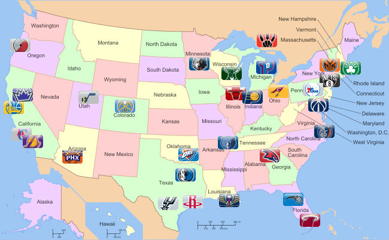

La NBA (National Basketball Association) es una liga privada de baloncesto profesional que se disputa en Estados Unidos desde 1949. Se fusionaron las ligas profesionales National Basketball League(NBL) y la Basketball Association of America (BAA). Al ser una entidad privada, no depende oficialmente de la Federación Estadounidense de Baloncesto. Los jugadores pueden competir internacionalmente tras un acuerdo a tres bandas firmado entre la Federación Internacional de Baloncesto (FIBA), la NBA y la Federación Estadounidense en 1989.
La Basketball Association of America (BAA) fue fundada en 1946 por propietarios de pabellones deportivos del noreste y medio-este, como el Madison Square Garden de Nueva York. Los 11 equipos que abrieron el telón en la temporada inaugural 1946-47 fueron Boston Celtics, Philadelphia Warriors, New York Knicks, Whasington Capitols, Providence Steamrollers, Toronto Huskies, Chicago Stags, St. Louis Bombers, Cleveland Rebels, Detroit Falcons y Pitsburgh Ironmen. Unicamente tres de esos equipos a perdudado hasta nuestros días: Boston Celtics, New York Knicks y Golden State Warriors.
Existian otras ligas de baloncesto profesionales en el país, pero la BAA fue la primera liga en jugar principalmente en pabellones grandes de ciudades importantes. El nivel de la BAA no era mejor que el de otras ligas, ni los equipos se podían comparar con clubes independientes como los Harlem Globetrotters. El Baltimore Bullets se mudó a la BAA despues de ser finalista de la ABL, los Minneapolis Lakers siguieron el mismo camino.
En 1950, la NBA se consolidó en once franquicias. Por aquel entonces, la NBA asistio al cambio de franquicias a ciudades más grandes y durante ese periodo, los Minneapolis Lakers ganarón cinco anillos, estableciendo la primera dinastia en la historia de la liga.
En 1950 también se vio la integración de la NBA con la incorporación de los primeros jugadores afroamericanos a la liga. Actualmente, la NBA está compuesta de jugadores de muchas razas diferentes. Despues de que los jugadores de color entraran en la NBA, sus características de juego cambiaron el mismo. De estilo muy extrovertido, eran más rapidos y hábiles. Incorporaron el mate, y actuaban con movimientos chulescos y llamativos. Otro cambio que se produjo fue incorporar la regla de los 24 segundos de posesión para aumentar el ritmo del juego. La regla determina que se debe lanzar a canasta antes de que el tiempo expire, si el lanzamiento no toca el aro o se convirtiera la canasta, se pita violación de juego y el equipo ofensivo pierde la posesión.
En 1956, el pivot rookie Bill Russell se incorporó a Boston Celtics. El equipò s econvirtio en una leyenda de la liga, ganando once anillos de campeón en las trece temporadas en las que estuvo activo. En 1959, el pivot Wilt Chamberlain entró a la liga y en poco tiempo se convirtió en uno de los jugadores más dominantes de siempre, estableciendo todo tipo de records en puntos y rebotes, y llegando a anotar 100 puntos en un partido.
La NBA en 1967 afrontó una amenaza externa con la formación de una nueva liga, la American Basketball Association (ABA). Las dos competiciones entraron en una guerra de puja por el talento de nuevos jugadores. La NBA salió airosa tras conseguir firmar a la estrella universitaria más importante de aquella era, Kareem Abdul-Jabbar. En 1976 el número de franquicias era de 22.
En la temporada 1979-80, la NBA agregó de la ABA la innovadora línea de tres puntos. Esa temporada, entrarían en la liga los rookies Magic Johnson y Larry Bird, para jugar en los Lakers y Celtics respectivamente, y se dio comienzo a un periodo en el que el interés por la liga y el número de aficionados creció tanto en el país como en el mundo entero. La preciosa rivalidad que mantenían estos dos jugadores fue, como muchos dicen, uno de los salvadores de la liga, que parecía que empezaba a vagar sin rumbo antes de sus llegadas. Bird ganaría con Boston tres títulos, mientras que Johnson se proclamaría vencedor de cinco campeonatos con los Lakers.
En 1984, Michael Jordan empezó a jugar en la NBA, provocando un mayor interés en la liga. En 1989, el número de equipos se elevaba ya a 27, siguiendo el proceso de expansión. urante la década de los 90, Jordan, ganaría seis anillos con los Bulls. En los Juegos Olímpicos de Barcelona de 1992 se vio al mejor equipo de la historia del baloncesto, el popular 'Dream Team' de Estados Unidos, que contaba (por primera vez con jugadores NBA) con estrellas como Jordan, Bird, Magic Johnson, Scottie Pippen, Charles Barkley o John Stockton. En esta década, un elevado número de jugadores comenzó a llegar de otros países.
Desde la desintegración de los Chicago Bulls en el verano de 1998, la Conferencia Oeste ha dominado la competición, con Los Angeles Lakers y San Antonio Spurs sumando el título nueve de catorce temporadas. Tim Duncan y David Robinson ganaron el 1999, y Shaquille O'Neal y Kobe Bryant comenzaron los años 2000 con tres campeonatos consecutivos para los Lakers. Los Spurs volvieron a ganar el título en 2003 contra los New Jersey Nets. En 2004, los Lakers volvieron a las Finales para caer en cinco partidos frente a los Detroit Pistons.
Después de que los Spurs se llevaran el Trofeo Larry O'Brien en 2005, en la temporada de 2006 se vio a dos franquicias que hacían sus primeras apariciones en las finales. Los Miami Heat, conducidos por su escolta estrella, Dwyane Wade, y Shaquille O'Neal, que había sido traspasado de los Lakers durante el verano 2004, ganaron la serie sobre los Dallas Mavericks en seis partidos después de perder los dos primeros. El dominio de Lakers / Spurs continuó en 2007 con una serie de cuatro partidos para los Spurs sobre unos Cleveland Cavaliers conducidos por LeBron James. En 2008 se vio una revancha de la rivalidad Celtics-Lakers (una de las más históricas de la liga), saliendo victoriosos los Celtics su decimoséptimo campeonato, gracias a los denominados Big-Three: Paul Pierce, Ray Allen y Kevin Garnett.
En 2009, Kobe Bryant y los Lakers volvieron a la final de la NBA de 2009, esta vez para derrotar a Dwight Howard y sus Orlando Magic para llevar a los angelinos a su decimoquinto título de la NBA. Bryant ganó su primer MVP de las finales en su decimotercera temporada después de liderar a los Lakers en su primer campeonato de la NBA desde la salida de Shaquille O'Neal.
Al final de la temporada, los Celtics y los Lakers reeditaron su rivalidad tras la edición de 2008 cuando se encontraron nuevamente en las finales por duodécima vez. Los Lakers ganaron el título al ganar el séptimo partido por 83-79. Antes del inicio de la temporada 2010-11, la NBA tuvo un emocionante verano con uno de los episodios más esperados de agentes libres de todos los tiempos. Dos de ellos firmaron, y uno renunció, con los Miami Heat, lo que les llevó a una temporada que estaría marcada dependiendo de un éxito o un fracaso a final del campeonato. Los Heat, liderados por LeBron James, Dwyane Wade, y Chris Bosh, llegaron a las finales contra los Dallas Mavericks en lo que fue una revancha entre las franquicias de la temporada 2006. Los Mavericks, conducidos por Dirk Nowitzki —el eventual MVP de las finales de la NBA— se adjudicaron el título tras seis partidos siendo el primer título de la franquicia. Los veteranos Shawn Marion, Jason Kidd, Jason Terry y Peđa Stojaković celebraron también su primer campeonato.
Desde 2004, la NBA está conformada por 30 franquicias y sigue desarrollándose como una de las principales ligas deportivas del mundo. Después del recorte y la temporada regular, los Miami Heat regresaron a las finales con el trío formado por Dwyane Wade, LeBron James y Chris Bosh quienes se enfrentaron al formado por Kevin Durant, Russell Westbrook y James Harden de los Oklahoma City Thunder. El equipo de Florida consiguió vencer en cinco partidos, conquistando su segundo título de la NBA en seis años. Su éxito continuó en la siguiente temporada, venciendo sobre los San Antonio Spurs en 2013, reeditando la final un año después que esta vez se decantó del lado de los texanos tras cinco partidos. Después de esa serie, LeBron James anunció que volvería a sus originarios Cleveland Cavaliers. James lideró al equipo de su estado natal a la segunda aparición de su historia en las finales, donde cayeron frente a los Golden State Warriors de Stephen Curry en seis partidos. Con Curry a la cabeza los Warriors volverían a la final en la temporada 2016, pero esta vez vencerían los Cavaliers ganando su primer campeonato de la NBA, tras necesitar jugarse un séptimo partido y siendo la primera vez que un equipo da vuelta un 3-1 adverso en las finales. Cabe destacar en esa temporada, el récord de 73-9 que lograron los californianos, dejando atrás a los míticos Bulls de Jordan y su récord de 72-10, en ambos casos con participación de Steve Kerr, primero en cancha con los Bulls y luego como entrenador de los Warriors. Así mismo, para la temporada 2017 también se repitió la final, demostrando la hegemonía alcanzada por Golden State y Cleveland en las últimas tres temporadas, en donde los de Oakland, liderados por un gran Curry y un decisivo Kevin Durant, ganarían la final en el quinto partido, tras doblegar sin mayores complicaciones a los de Ohio. En 2018 Golden State Warriors volvió a superar a Cleveland Cavaliers, esta vez con un rotundo 4-0. Sin embargo, en 2019, Toronto Raptors se convirtió en el primer equipo no estadounidense en ganar un título de la NBA a superar a Golden State Warriors.
En la temporada regular cada equipo disputa 82 partidos, divididos en partes iguales entre encuentros de local y visitante. El calendario no es el mismo para todos. Los equipos se enfrentan con los oponentes de su propia división en cuatro ocasiones; ante los de las otras dos divisiones de su conferencia, entre tres o cuatro veces; y contra los de la otra conferencia, dos veces al año. Por lo tanto, un equipo puede tener fácil o difícil el calendario, dependiendo en la división o conferencia en la que esté localizado. Después de los recientes cambios de formato del calendario de la NHL, la de baloncesto es la única liga estadounidense de primer nivel en la que todas las franquicias se enfrentan unas contra otras durante la temporada regular, y en la que un ticket de temporada te garantiza poder ver a tu equipo cada vez que venga a jugar a la ciudad durante la temporada regular.
En febrero, la NBA se interrumpe para celebrar el anual All-Star Game. Los jugadores son sometidos a votación por todo Estados Unidos y Canadá, y a través de Internet. El jugador más votado en cada posición y en cada conferencia comenzará de titular en el All-Star Team de su conferencia. Los entrenadores de sus respectivas ligas son los encargados de elegir los 7 jugadores restantes. Los entrenadores que mejor balance victorias-derrotas llevan con su equipo hasta febrero son los encargados de dirigir al equipo de su conferencia, y no pueden dirigir en años consecutivos. El Oeste y el Este se enfrentan, y el jugador que mejor actuación haya realizado durante el encuentro será galardonado con el premio MVP del All-Star. Otra de las atracciones del fin de semana de las estrellas es el partido entre los rookies (novatos) y los sophomores (jugadores de segundo año), y los concursos de triples (5 carros con 4 balones normales cada uno y uno tricolor cuya valor es del doble). Gana el que más triples mete en un tiempo definido con un máximo de 30), de mates (un jurado compuesto de 5 jueces veteranos, normalmente retirados, jugadores con experiencia en la modalidad de mates), habilidades (un recorrido con diferentes obstáculos a realizar en el menor tiempo posible) y el concurso de tiros de campo por equipo (se escogen 4 equipos o zonas. En cada uno tiene que haber un jugador actual de la NBA, uno retirado y una jugadora de la WNBA. Hay diferentes zonas marcadas en la cancha que son las mismas para todos los equipos. Gana el equipo que enceste desde todas las posiciones en el menor tiempo posible).
Tras el All-Star, finaliza el plazo para realizar traspasos. Después de ese día, los equipos no pueden intercambiar jugadores hasta final de temporada, aunque sí está permitido firmar agentes libres y despedir jugadores. Muchos traspasos son realizados poco antes o durante esa fecha, haciendo de ese día uno de los más agitados para los equipos en todo el año.
En el mes de abril finaliza la temporada regular. Durante ese tiempo, comienza el periodo de votación de los premios individuales de la temporada. El premio al mejor sexto hombre lo recibe el jugador que más ha aportado saliendo desde el banquillo (sin ser titular en su equipo). El rookie del año va para el mejor novato, mientras que el premio al Jugador Más Mejorado lo recibe, como su propio nombre indica, al jugador que más ha progresado de una temporada a otra. El jugador más defensivo de la liga se lleva el premio al mejor defensor, el entrenador del año para el mejor entrenador de esa temporada, y el MVP al mejor jugador. Además, Sporting News concede anualmente un premio no oficial (pero extensamente aprobado) al mejor ejecutivo de la temporada.
En la postemporada también se dan a conocer los tres mejores quintetos del año, así como los dos de rookies y defensivos.
Los Playoffs de la NBA consiste en cuatro rondas de competición entre dieciséis equipos repartidos en la Conferencia Oeste y la Conferencia Este, ocho equipos por cada Conferencia. Los ganadores de la Primera Ronda (o cuartos de final de conferencia) avanzan a las Semifinales de Conferencia, posteriormente a las Finales de Conferencia y los vencedores a las Finales de la NBA, disputadas entre los campeones de cada conferencia.
Comienzan a finales de abril, con ocho equipos de cada conferencia clasificados. Hasta la temporada 2005-2006, los tres primeros puestos de cada conferencia venían determinados por los primeros clasificados en cada división, siguiendo a su vez el balance victorias-derrotas.
Esta regla generó mucha controversia y ese año fue decisivo para que se aboliese, ya que debido a ella se enfrentaron en Segunda Ronda los dos mejores equipos de la Conferencia Oeste en cuanto a récord, los Dallas Mavericks y San Antonio Spurs. Dallas pese a ser segundo en porcentaje de victorias en esa conferencia cayó al puesto número 4 con lo cual se debería enfrentar al número 1 en segunda ronda mientras que otros equipos con peor récord tenían un camino más sencillo. Era un claro perjuicio tanto para Dallas como para San Antonio pese a que habían sido los mejores en la fase regular.
A partir de la temporada 2006-2007, los primeros cuatro equipos, los tres campeones de división y el mejor segundo, son emparejados tomando en cuenta el total de partidos ganados y perdidos, de modo que los dos mejores equipos de cada conferencia no se enfrenten sino hasta la final del campeonato. La posición de los cuatro equipos restantes viene determinada por el porcentaje de victorias de cada uno de ellos. El ser campeón de división no garantiza tener la ventaja de campo en las eliminatorias de los playoffs, algo insólito en los deportes estadounidenses. La ventaja de campo está estrictamente basada en el balance de victorias-derrotas durante la temporada regular, sin respetar a los ganadores de división.
El tener un récord más alto ofrece varias ventajas. Ya que el primer clasificado jugará contra el octavo, el segundo contra el séptimo, el tercero contra el sexto y el cuarto contra el quinto, el tener un mejor balance normalmente quiere decir que te enfrentarás a un equipo más débil. La franquicia con mejor balance tiene la ventaja de campo en cada serie de playoffs, incluida la primera ronda. Esto significa que, por ejemplo, si el equipo que recibe al sexto clasificado tiene mejor balance que el tercer clasificado, el sexto tendría ventaja de campo, a pesar de que el tercer equipo tenga un puesto en la clasificación más alto.
Las series de playoffs siguen un formato de competición. Cada eliminatoria es al mejor de siete partidos (hasta 2003 la primera ronda de los Playoffs era al mejor de cinco partidos), avanzando de serie el primero que gane cuatro partidos, mientras que el perdedor es eliminado de los playoffs. En la siguiente ronda, el equipo ganador juega contra otro de su misma conferencia. Así, todos excepto uno son eliminados de los playoffs en cada conferencia. En cada ronda (incluidas las finales de la NBA), se sigue el modelo 2-2-1-1-1, queriendo decir que el equipo que tenga la ventaja de campo jugará en casa los partidos 1, 2, 5 y 7, mientras que su rival lo hará en los partidos 3, 4 y 6. Esta regla cambió a partir de la temporada 2013-2014, ya que en las Finales de la NBA se utilizaba el modelo 2-3-2.
En la ronda final, se enfrentan los campeones de cada conferencia al mejor de siete partidos. El primero que consiga vencer en cuatro partidos, se le conocerá como el campeón de la NBA. Se disputa anualmente en junio, y al campeón se le galardona con el Larry O'Brien Championship Trophy desde 1977, fecha en la que reemplazó al Trofeo Walter A. Brown. La idea de llamar al trofeo de campeón Larry O'Brien, es en honor al comisionado de la NBA que precedió a David Stern, Larry O'Brien. A cada jugador del equipo victorioso, además del entrenador y el mánager general, se le entrega un anillo de campeón. Además, la liga entrega el trofeo Bill Russell MVP de las Finales. Este trofeo es llamado Bill Russell en honor del legendario jugador de los Celtics de Boston que ganó 11 campeonatos en 13 años de carrera profesional. Este premio normalmente lo recibe un jugador del equipo ganador, aunque esto no sea una norma. Solo ha habido una excepción hasta la fecha: Jerry West recibió el MVP de las Finales en 1969 (primera temporada en la que se entregaba este premio) a pesar de que los Lakers no ganaron el anillo.
El Draft es un sistema para controlar que el acceso de nuevos jugadores a la liga beneficie a la competencia. Básicamente permite a los equipos más débiles de un año seleccionar a los jugadores que deseen para la siguiente campaña, nivelando la competición a corto/medio plazo.
Todos los jugadores que quieren formar parte de la NBA se inscriben para participar en la elección del Draft que se realiza a principios del verano. En ella cada uno de los equipos de la liga tiene derecho a elegir un jugador en principio. Originalmente el equipo con peor índice de victorias en la liga regular anterior elegía al jugador que deseaba, después lo hacía el siguiente equipo con menos victorias, etc.
Sin embargo, se observó que algunos equipos que no tenían posibilidades de clasificarse para los playoffs se dejaban perder en los últimos partidos de competición para tener un número más alto de elección. Por ello se decidió que las primeras 14 elecciones se decidieran por un sorteo mediante una lotería.
Actualmente en dicho sorteo solo entran los equipos que no han jugado los playoffs. De ellos el que más victorias cosechó en la liga regular anterior es el que menos posibilidades tiene, el segundo con más victorias tiene algo más de posibilidades, etc. El resto de las elecciones se hace por orden inverso a la posición ocupada en la clasificación de la última campaña.
Sin embargo, conviene aclarar que el hecho de seleccionar en un lugar alto no asegura que el jugador seleccionado sea el mejor. La historia de la NBA está llena de errores y elecciones discutibles en las primeras posiciones, como el año 1984, en el que Houston Rockets eligió a Hakeem Olajuwon como n.º 1 y Portland Trail Blazers incomprensiblemente seleccionaron a Sam Bowie con el n.º 2 dejando a Chicago Bulls elegir con el n.º 3 a Michael Jordan.
Otro aspecto clave es que debido a la escasa edad con la que se incorporan los futuro jugadores al Draft (sin acabar sus estudios universitarios) hace que sea realmente difícil para los equipos calibrar qué jugador ofrecerá mejor rendimiento a medio plazo.
El 30 de junio de 2011, la NBA anunció oficialmente el paro patronal debido a la inconformidad de los jugadores y los dueños respectivamente. Esta sería la segunda vez que en la NBA se convocara una huelga. La primera se produjo en la temporada 1998-99.
La NBA se originó en 1946 con once equipos, y fue creciendo a través de una secuencia de expansiones de equipos, reducciones y reubicaciones para conformar un plantel actual que se compone de 30 equipos o franquicias. De ellos, un total de 29 se encuentran localizados en Estados Unidos y solamente uno se encuentra en Canadá. Desde su nacimiento se han producido un total de once expansiones para albergar a dieciocho nuevos equipos, siendo el último de ellos los Charlotte Bobcats de Carolina del Norte, quienes recuperaron su denominación histórica de Hornets en 2014.
La organización actual de la liga divide a los equipos en dos conferencias —la Oeste y la Este— de tres divisiones cada una, las cuales constan a su vez de cinco equipos. La división territorial actual fue introducida en la temporada 2004-05. Reflejando la distribución de la población de los Estados Unidos y de Canadá en conjunto, la mayoría de los equipos están en la mitad del este del país: trece equipos están en la zona horaria del este, nueve en la zona central, tres en la zona horaria montañosa, y cinco en la Pacífico.
El comisionado se encarga de que haya el mismo número de franquicias en cada conferencia para mantener una división equivalente. En los casos en los que se produce una reubicación de franquicia, el mapa divisional se reestructura para que cada división cuente con los cinco equipos del cupo.
| Conferencia Este | |||||
|---|---|---|---|---|---|
| División | Equipo | Ciudad | Pabellón | Fundado | Patrocinio |
| NorthWest | Denver Nuggets | Denver, CO | Ball Arena | 1967 | Western Union |
| Minnesota Timberwolves | Mineápolis, MN | Target Center | 1989 | Ninguno | |
| Oklahoma City Thunder | Oklahoma City, OK | Paycom Center | 1967 | Love's | |
| Portland Trail Blazers | Portland, OR | Moda Center | 1970 | Performance Health | |
| Utah Jazz | Salt Lake City, UT | Vivint Arena | 1974 | Qualtrics | |
| SouthWest | Dallas Mavericks | Dallas, TX | American Airlines Center | 1980 | Chime |
| Houston Rockets | Houston, TX | Toyota Center | 1967 | Ninguno | |
| Memphis Grizzlies | Memphis, TN | FedExForum | 1995 | FedEx | |
| New Orleans Pelicans | Nueva Orleans, LA | Smoothie King Center | 1988 | Ibotta | |
| San Antonio Spurs | San Antonio, TX | AT&T Center | 1967 | Frost Bank | |
| Pacific | Golden State Warriors | San Francisco, CA | Chase Center | 1946 | Rakuten |
| Los Angeles Clippers | Los Ángeles, CA | Crypto.com Arena | 1970 | Honey | |
| Los Angeles Lakers | Los Ángeles, CA | Crypto.com Arena | 1946 | Wish | |
| Phoenix Suns | Phoenix, AZ | Footprint Center | 1968 | PayPal | |
| Sacramento Kings | Sacramento, CA | Golden 1 Center | 1945 | Ninguno | |
| Conferencia Oeste | |||||
|---|---|---|---|---|---|
| División | Equipo | Ciudad | Pabellón | Fundado | Patrocinio |
| Atlantic | Boston Celtics | Boston, MA | TD Garden | 1946 | Vistaprint |
| Brooklyn Nets | Nueva York, NY | Barclays Center | 1967 | Motorola | |
| New York Knicks | Nueva York, NY | Madison Square Garden | 1946 | Squarespace | |
| Philadelphia 76ers | Filadelfia, PA | Wells Fargo Center | 1939 | StubHub | |
| Toronto Raptors | Toronto, ON Canadá | Scotiabank Arena | 1995 | Sun Life | |
| Central | Chicago Bulls | Chicago, IL | United Center | 1966 | Zenni Optical |
| Cleveland Cavalliers | Cleveland, OH | Rocket Mortgage FieldHouse | 1970 | Goodyear | |
| Detroit Pistons | Detroit, MI | Little Caesars Arena | 1941 | Flagstar Bank | |
| Indiana Pacers | Indeanápolis, IN | Gainbridge Fieldhouse | 1967 | Motorola | |
| Milwaukee Bucks | Milwaukee, WI | Fiserv Forum | 1968 | Motorola | |
| SouthEast | Atlanta Hawks | Atlanta, GA | State Farm Arena | 1946 | Sharecare |
| Charlotte Hornets | Charlotte, NC | Spectrum Center | 1988 | LendingTree | |
| Miami Heat | Miami, FL | FTX Arena | 1988 | UKG | |
| Orlando Magic | Orlando, FL | Amway Center | 1989 | Disney World | |
| Whasington Wizard | Whasington D.C. | Capital One Arena | 1961 | GEICO | |